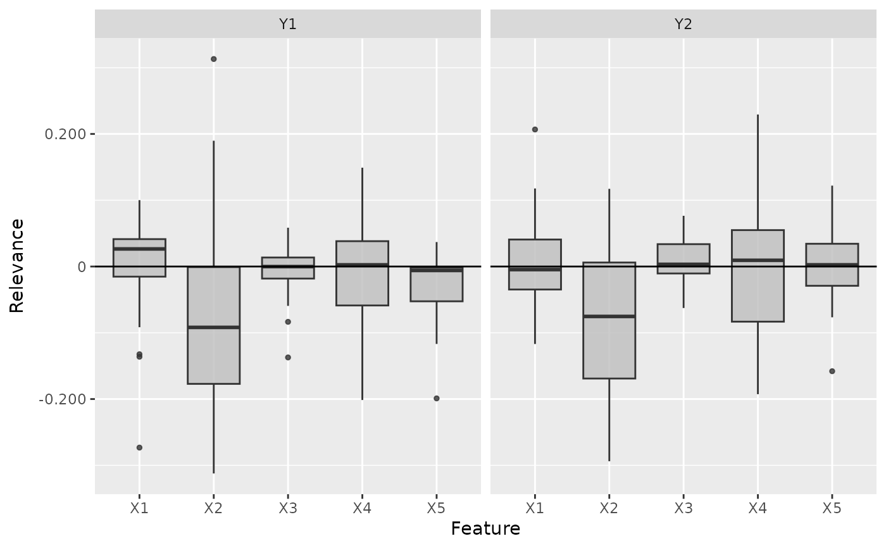
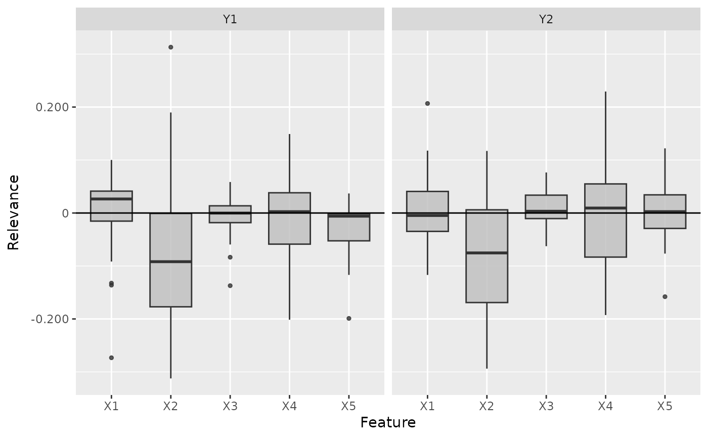

This is an implementation of the layer-wise relevance propagation (LRP) algorithm introduced by Bach et al. (2015). It's a local method for interpreting a single element of the dataset and calculates the relevance scores for each input feature to the model output. The basic idea of this method is to decompose the prediction score of the model with respect to the input features, i.e., $$f(x) = \sum_i R(x_i).$$ Because of the bias vector that absorbs some relevance, this decomposition is generally an approximation. There exist several propagation rules to determine the relevance scores. In this package are implemented: simple rule ("simple"), \(\varepsilon\)-rule ("epsilon") and \(\alpha\)-\(\beta\)-rule ("alpha_beta").
The R6 class can also be initialized using the run_lrp function
as a helper function so that no prior knowledge of R6 classes is required.
References
S. Bach et al. (2015) On pixel-wise explanations for non-linear classifier decisions by layer-wise relevance propagation. PLoS ONE 10, p. 1-46
See also
Other methods:
ConnectionWeights,
DeepLift,
DeepSHAP,
ExpectedGradient,
Gradient,
IntegratedGradient,
LIME,
SHAP,
SmoothGrad
Super class
innsight::InterpretingMethod -> LRP
Public fields
rule_name(
character(1)orlist)
The name of the rule with which the relevance scores are calculated. Implemented are"simple","epsilon","alpha_beta"(and"pass"but only for 'BatchNorm_Layer'). However, this value can also be a named list that assigns one of these three rules to each implemented layer type separately, e.g.,list(Dense_Layer = "simple", Conv2D_Layer = "alpha_beta"). Layers not specified in this list then use the default value"simple". The implemented layer types are:\(\cdot\) 'Dense_Layer' \(\cdot\) 'Conv1D_Layer' \(\cdot\) 'Conv2D_Layer' \(\cdot\) 'BatchNorm_Layer' \(\cdot\) 'AvgPool1D_Layer' \(\cdot\) 'AvgPool2D_Layer' \(\cdot\) 'MaxPool1D_Layer' \(\cdot\) 'MaxPool2D_Layer' rule_param(
numericorlist)
The parameter of the selected rule. Similar to the argumentrule_name, this can also be a named list that assigns a rule parameter to each layer type.
Methods
Method new()
Create a new instance of the LRP R6 class. When initialized,
the method LRP is applied to the given data and the results are stored in
the field result.
Usage
LRP$new(
converter,
data,
channels_first = TRUE,
output_idx = NULL,
output_label = NULL,
ignore_last_act = TRUE,
rule_name = "simple",
rule_param = NULL,
winner_takes_all = TRUE,
verbose = interactive(),
dtype = "float"
)Arguments
converter(
Converter)
An instance of theConverterclass that includes the torch-converted model and some other model-specific attributes. SeeConverterfor details.data(
array,data.frame,torch_tensororlist)
The data to which the method is to be applied. These must have the same format as the input data of the passed model to the converter object. This means eitheran
array,data.frame,torch_tensoror array-like format of size (batch_size, dim_in), if e.g., the model has only one input layer, ora
listwith the corresponding input data (according to the upper point) for each of the input layers.
channels_first(
logical(1))
The channel position of the given data (argumentdata). IfTRUE, the channel axis is placed at the second position between the batch size and the rest of the input axes, e.g.,c(10,3,32,32)for a batch of ten images with three channels and a height and width of 32 pixels. Otherwise (FALSE), the channel axis is at the last position, i.e.,c(10,32,32,3). If the data has no channel axis, use the default valueTRUE.output_idx(
integer,listorNULL)
These indices specify the output nodes for which the method is to be applied. In order to allow models with multiple output layers, there are the following possibilities to select the indices of the output nodes in the individual output layers:An
integervector of indices: If the model has only one output layer, the values correspond to the indices of the output nodes, e.g.,c(1,3,4)for the first, third and fourth output node. If there are multiple output layers, the indices of the output nodes from the first output layer are considered.A
listofintegervectors of indices: If the method is to be applied to output nodes from different layers, a list can be passed that specifies the desired indices of the output nodes for each output layer. Unwanted output layers have the entryNULLinstead of a vector of indices, e.g.,list(NULL, c(1,3))for the first and third output node in the second output layer.NULL(default): The method is applied to all output nodes in the first output layer but is limited to the first ten as the calculations become more computationally expensive for more output nodes.
output_label(
character,factor,listorNULL)
These values specify the output nodes for which the method is to be applied. Only values that were previously passed with the argumentoutput_namesin theconvertercan be used. In order to allow models with multiple output layers, there are the following possibilities to select the names of the output nodes in the individual output layers:A
charactervector orfactorof labels: If the model has only one output layer, the values correspond to the labels of the output nodes named in the passedConverterobject, e.g.,c("a", "c", "d")for the first, third and fourth output node if the output names arec("a", "b", "c", "d"). If there are multiple output layers, the names of the output nodes from the first output layer are considered.A
listofcharactor/factorvectors of labels: If the method is to be applied to output nodes from different layers, a list can be passed that specifies the desired labels of the output nodes for each output layer. Unwanted output layers have the entryNULLinstead of a vector of labels, e.g.,list(NULL, c("a", "c"))for the first and third output node in the second output layer.NULL(default): The method is applied to all output nodes in the first output layer but is limited to the first ten as the calculations become more computationally expensive for more output nodes.
ignore_last_act(
logical(1))
Set this logical value to include the last activation functions for each output layer, or not (default:TRUE). In practice, the last activation (especially for softmax activation) is often omitted.rule_name(
character(1)orlist)
The name of the rule with which the relevance scores are calculated. Implemented are"simple","epsilon","alpha_beta". You can pass one of the above characters to apply this rule to all possible layers. However, this value can also be a named list that assigns one of these three rules to each implemented layer type separately, e.g.,list(Dense_Layer = "simple", Conv2D_Layer = "alpha_beta"). Layers not specified in this list then use the default value"simple". The implemented layer types are:\(\cdot\) 'Dense_Layer' \(\cdot\) 'Conv1D_Layer' \(\cdot\) 'Conv2D_Layer' \(\cdot\) 'BatchNorm_Layer' \(\cdot\) 'AvgPool1D_Layer' \(\cdot\) 'AvgPool2D_Layer' \(\cdot\) 'MaxPool1D_Layer' \(\cdot\) 'MaxPool2D_Layer' Note: For normalization layers like 'BatchNorm_Layer', the rule
"pass"is implemented as well, which ignores such layers in the backward pass.rule_param(
numeric(1)orlist)
The parameter of the selected rule. Note: Only the rules"epsilon"and"alpha_beta"take use of the parameter. Use the default valueNULLfor the default parameters ("epsilon" : \(0.01\), "alpha_beta" : \(0.5\)). Similar to the argumentrule_name, this can also be a named list that assigns a rule parameter to each layer type. If the layer type is not specified in the named list, the default parameters will be used.winner_takes_all(
logical(1))
This logical argument is only relevant for models with a MaxPooling layer. Since many zeros are produced during the backward pass due to the selection of the maximum value in the pooling kernel, another variant is implemented, which treats a MaxPooling as an AveragePooling layer in the backward pass to overcome the problem of too many zero relevances. With the default valueTRUE, the whole upper-layer relevance is passed to the maximum value in each pooling window. Otherwise, ifFALSE, the relevance is distributed equally among all nodes in a pooling window.verbose(
logical(1))
This logical argument determines whether a progress bar is displayed for the calculation of the method or not. The default value is the output of the primitive R functioninteractive().dtype(
character(1))
The data type for the calculations. Use either'float'for torch_float or'double'for torch_double.
Examples
#----------------------- Example 1: Torch ----------------------------------
library(torch)
# Create nn_sequential model and data
model <- nn_sequential(
nn_linear(5, 12),
nn_relu(),
nn_linear(12, 2),
nn_softmax(dim = 2)
)
data <- torch_randn(25, 5)
# Create Converter
converter <- convert(model, input_dim = c(5))
# Apply method LRP with simple rule (default)
lrp <- LRP$new(converter, data)
# You can also use the helper function `run_lrp` for initializing
# an R6 LRP object
lrp <- run_lrp(converter, data)
# Print the result as an array for data point one and two
get_result(lrp)[1:2,,]
#> , , Y1
#>
#> X1 X2 X3 X4 X5
#> [1,] 0.02427530 0.02145078 0.01082923 -0.16485286 -0.10343291
#> [2,] -0.07417239 0.11438056 -0.76206994 0.01025855 -0.03916865
#>
#> , , Y2
#>
#> X1 X2 X3 X4 X5
#> [1,] -0.03275532 -0.05836438 -0.008767402 0.28228047 0.068588026
#> [2,] 0.14148718 -0.05340111 0.446544319 -0.02247895 -0.009151287
#>
# Plot the result for both classes
plot(lrp, output_idx = 1:2)
 # Plot the boxplot of all datapoints without a preprocess function
boxplot(lrp, output_idx = 1:2, preprocess_FUN = identity)

# ------------------------- Example 2: Neuralnet ---------------------------
if (require("neuralnet")) {
library(neuralnet)
data(iris)
nn <- neuralnet(Species ~ .,
iris,
linear.output = FALSE,
hidden = c(10, 8), act.fct = "tanh", rep = 1, threshold = 0.5
)
# Create an converter for this model
converter <- convert(nn)
# Create new instance of 'LRP'
lrp <- run_lrp(converter, iris[, -5], rule_name = "simple")
# Get the result as an array for data point one and two
get_result(lrp)[1:2,,]
# Get the result as a torch tensor for data point one and two
get_result(lrp, type = "torch.tensor")[1:2]
# Use the alpha-beta rule with alpha = 2
lrp <- run_lrp(converter, iris[, -5],
rule_name = "alpha_beta",
rule_param = 2
)
# Include the last activation into the calculation
lrp <- run_lrp(converter, iris[, -5],
rule_name = "alpha_beta",
rule_param = 2,
ignore_last_act = FALSE
)
# Plot the result for all classes
plot(lrp, output_idx = 1:3)
}
# Plot the boxplot of all datapoints without a preprocess function
boxplot(lrp, output_idx = 1:2, preprocess_FUN = identity)

# ------------------------- Example 2: Neuralnet ---------------------------
if (require("neuralnet")) {
library(neuralnet)
data(iris)
nn <- neuralnet(Species ~ .,
iris,
linear.output = FALSE,
hidden = c(10, 8), act.fct = "tanh", rep = 1, threshold = 0.5
)
# Create an converter for this model
converter <- convert(nn)
# Create new instance of 'LRP'
lrp <- run_lrp(converter, iris[, -5], rule_name = "simple")
# Get the result as an array for data point one and two
get_result(lrp)[1:2,,]
# Get the result as a torch tensor for data point one and two
get_result(lrp, type = "torch.tensor")[1:2]
# Use the alpha-beta rule with alpha = 2
lrp <- run_lrp(converter, iris[, -5],
rule_name = "alpha_beta",
rule_param = 2
)
# Include the last activation into the calculation
lrp <- run_lrp(converter, iris[, -5],
rule_name = "alpha_beta",
rule_param = 2,
ignore_last_act = FALSE
)
# Plot the result for all classes
plot(lrp, output_idx = 1:3)
}
 # ------------------------- Example 3: Keras -------------------------------
if (require("keras") & keras::is_keras_available()) {
library(keras)
# Make sure keras is installed properly
is_keras_available()
data <- array(rnorm(10 * 60 * 3), dim = c(10, 60, 3))
model <- keras_model_sequential()
model %>%
layer_conv_1d(
input_shape = c(60, 3), kernel_size = 8, filters = 8,
activation = "softplus", padding = "valid") %>%
layer_conv_1d(
kernel_size = 8, filters = 4, activation = "tanh",
padding = "same") %>%
layer_conv_1d(
kernel_size = 4, filters = 2, activation = "relu",
padding = "valid") %>%
layer_flatten() %>%
layer_dense(units = 64, activation = "relu") %>%
layer_dense(units = 16, activation = "relu") %>%
layer_dense(units = 3, activation = "softmax")
# Convert the model
converter <- convert(model)
# Apply the LRP method with the epsilon rule for the dense layers and
# the alpha-beta rule for the convolutional layers
lrp_comp <- run_lrp(converter, data,
channels_first = FALSE,
rule_name = list(Dense_Layer = "epsilon", Conv1D_Layer = "alpha_beta"),
rule_param = list(Dense_Layer = 0.1, Conv1D_Layer = 1)
)
# Plot the result for the first datapoint and all classes
plot(lrp_comp, output_idx = 1:3)
# Plot the result as boxplots for first two classes
boxplot(lrp_comp, output_idx = 1:2)
}
# ------------------------- Example 3: Keras -------------------------------
if (require("keras") & keras::is_keras_available()) {
library(keras)
# Make sure keras is installed properly
is_keras_available()
data <- array(rnorm(10 * 60 * 3), dim = c(10, 60, 3))
model <- keras_model_sequential()
model %>%
layer_conv_1d(
input_shape = c(60, 3), kernel_size = 8, filters = 8,
activation = "softplus", padding = "valid") %>%
layer_conv_1d(
kernel_size = 8, filters = 4, activation = "tanh",
padding = "same") %>%
layer_conv_1d(
kernel_size = 4, filters = 2, activation = "relu",
padding = "valid") %>%
layer_flatten() %>%
layer_dense(units = 64, activation = "relu") %>%
layer_dense(units = 16, activation = "relu") %>%
layer_dense(units = 3, activation = "softmax")
# Convert the model
converter <- convert(model)
# Apply the LRP method with the epsilon rule for the dense layers and
# the alpha-beta rule for the convolutional layers
lrp_comp <- run_lrp(converter, data,
channels_first = FALSE,
rule_name = list(Dense_Layer = "epsilon", Conv1D_Layer = "alpha_beta"),
rule_param = list(Dense_Layer = 0.1, Conv1D_Layer = 1)
)
# Plot the result for the first datapoint and all classes
plot(lrp_comp, output_idx = 1:3)
# Plot the result as boxplots for first two classes
boxplot(lrp_comp, output_idx = 1:2)
}
 #------------------------- Plotly plots ------------------------------------
if (require("plotly")) {
# You can also create an interactive plot with plotly.
# This is a suggested package, so make sure that it is installed
library(plotly)
# Result as boxplots
boxplot(lrp, as_plotly = TRUE)
# Result of the second data point
plot(lrp, data_idx = 2, as_plotly = TRUE)
}
#------------------------- Plotly plots ------------------------------------
if (require("plotly")) {
# You can also create an interactive plot with plotly.
# This is a suggested package, so make sure that it is installed
library(plotly)
# Result as boxplots
boxplot(lrp, as_plotly = TRUE)
# Result of the second data point
plot(lrp, data_idx = 2, as_plotly = TRUE)
}